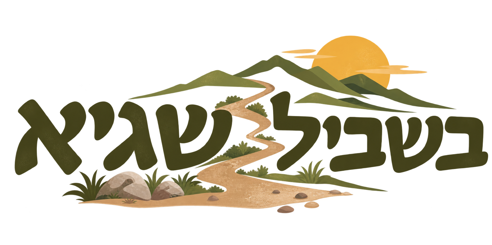
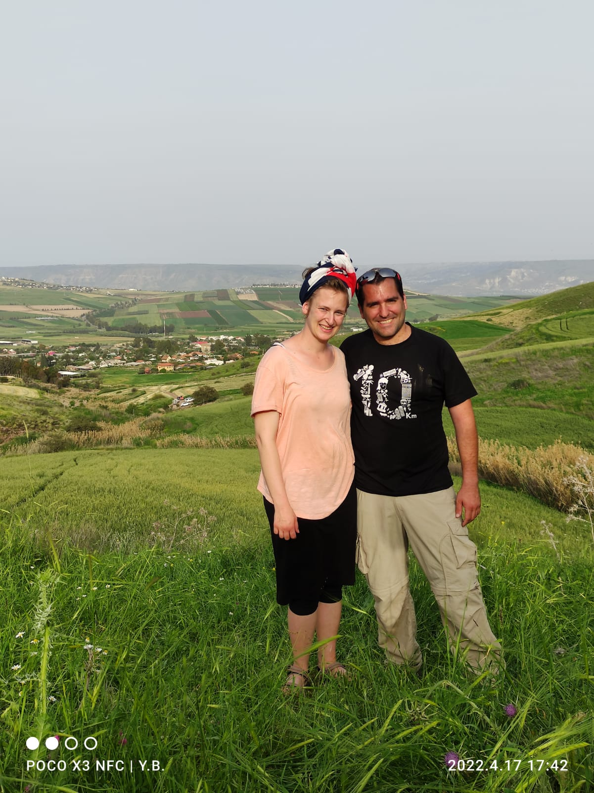

משחק זיכרון לזכרו של שגיא
לאורך השביל פוזרו קודי QR. סרקו, שחקו, למדו - וקחו איתכם משהו מהאיש שאהב כל כך את הארץ הזאת.

שגיא
שגיא אהב לטייל. לא רק ללכת - אלא להכיר, ללמוד, לשים לב לסימון על הסלע,
לעצור ליד מפל, לספר סיפור.
השביל הזה הוא שלו.
איך זה עובד?
1
מצאו שלט עם קוד QR
לאורך המסלול יש תחנות עם קוד QR. כל תחנה היא הרפתקה אחרת.
2
סרקו עם הטלפון
פתחו את מצלמת הטלפון וכוונו אותה לקוד. הפעילות נפתחת מיד - ללא אפליקציה.
3
שחקו, למדו, היזכרו
כל תחנה מציעה פעילות אחרת: חידון, משחק מפה, זיכרון על שגיא.
4
עברו לתחנה הבאה
סיימתם? המשיכו בשביל ופגשו את הסימון הבא.
"לא משנה כמה קילומטרים, תמיד יש עוד משהו לראות מעבר לפנייה."
צאו לדרך.